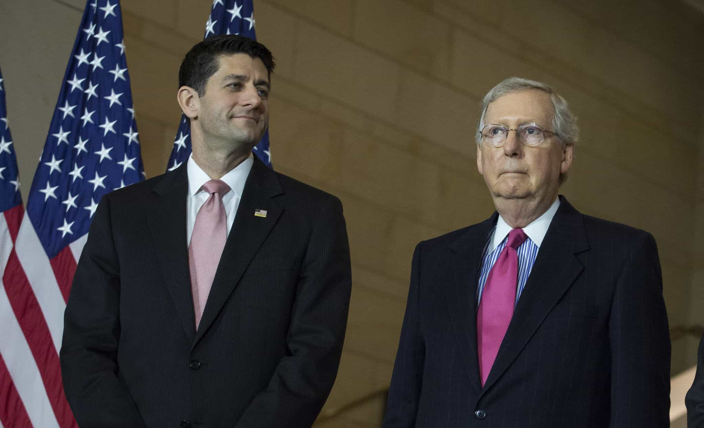

Though Brexit and the election of Donald Trump taught us how we can beat the odds, Republican and true conservative Roy Moore never really stood a chance in the Alabama Senate race he lost. He was weighed down by a myriad of completely unsubstantiated sexual accusations, all while the GOP and its chief functionaries, including House Speaker Paul Ryan and Senate Majority Leader Mitch McConnell, utterly sabotaged his campaign.
This kind of trial by media and social media is going to happen many times over in our political future, particularly against rightwing candidates. Doug Jones’ election is indeed historical, marking the first time in a quarter of a century that a Democrat has represented Alabama in the US Senate. Henceforth, the advantages of backing the claims of a Republican opponent’s sexual accusers, or even orchestrating the accusations in the first place, is going to be irresistible to Democrats.
I would argue that previously politicians were relatively insulated from dubious sexual allegations. Although the “Republican war on women” lie favored Democrats, there seems to have been a paucity of sex scandals for either party. Both sides probably realized the dangers of reciprocal mud-slinging, whereby the Democrats would quickly jump on some woman’s accusations against a Republican and vice versa.
Across the United States’ many thousands of federal and state legislators, plus the countless others who unsuccessfully ran for these seats, comparatively few controversies emerged in the past, at least not publicly. Nevertheless, the ruthlessness involved in Roy Moore’s case indicates that we are most likely turning a corner. A very bad corner.
Kudos to Roy Moore

Paul Ryan and Mitch McConnell, enablers of “rape culture” hysteria.
Moore did extremely well considering the circumstances of this special Senate election, regardless of how red a state Alabama traditionally is. Doug Jones did not secure a majority (this may change after further votes are counted or recounted) and Moore had garnered, last time I checked, a very respectable 48.4% of the ballots after being called a predator, rapist, and pedophile.
Paul Ryan, Mitch McConnell and many others told Moore to quit a long time ago. The GOP itself suspended his funding and then later pretended to support him by restoring it. The games and betrayal at play against Moore have been unprecedented. To boot, this farce comes without a shred of evidence leading to a proper police investigation of him, let alone charges being laid.
So, again, this week’s win to Doug Jones sends an unequivocal message to political mud-rakers and backstabbers everywhere: by repeating unproven, apparently opportunistic sexual allegations against your conservative adversaries, within and outside your own party, you will derail them 95% of the time. This character assassination is what the future holds for Republicans in general elections and conservative Republicans in GOP primaries.
You need to have total recall or you’re totally screwed, but even with it you’re still screwed
Total recall, American politics edition.
The women’s allegations about Roy Moore have been presented in the mainstream media ad nauseam. I will not go into every example of them here, far from it. A general synopsis of Moore’s situation, however, is simple. Women (and the Democrats and the GOP leadership) did not need any hard evidence to “convict” him and any time he could not remember one of these women from decades ago perfectly, it was used against him as “proof” of sexual impropriety.
If someone today accused another person of a robbery or physical assault from 20, 30 or 40 years ago, the media and others would largely ignore the story, citing the lack of evidence and huge delay in making the allegations. Allegations of “harassment,” sexual assault, and rape, by contrast, are of a different breed. Almost any gap between an alleged event and when a woman “reports” (usually not to police) has been tolerated in non-political arenas for years, which has paved the way for Roy Moore-style political allegations in 2017.
When Moore could specifically deny even meeting a certain woman, he was in only a marginally better position. Without video proof of every interaction he has ever had (or not had) with his accusers, he was perceived as being guilty as sin. This is the brave new world that the conservative politician, once reasonably shielded from spurious sexual accusations, now faces alongside the regular man or non-political celebrity male.
Read More: Anonymous Sexual Harassment Allegations Leads To Suicide Of Welsh Politician Carl Sargeant